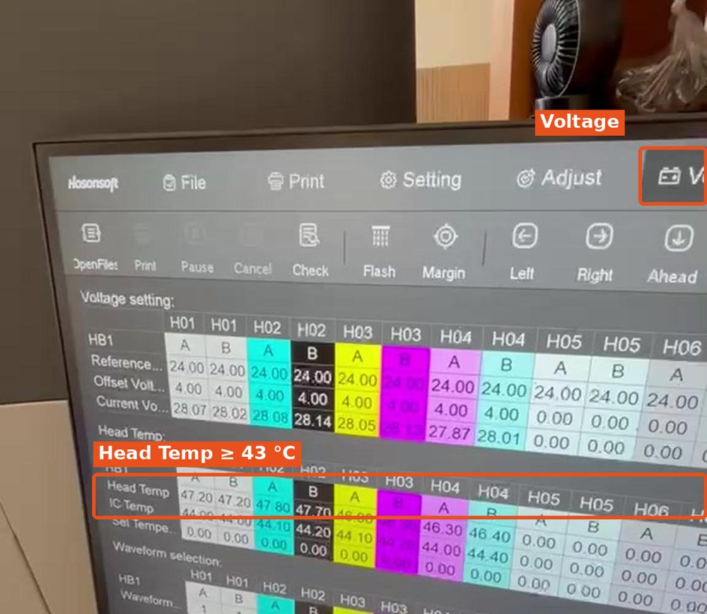
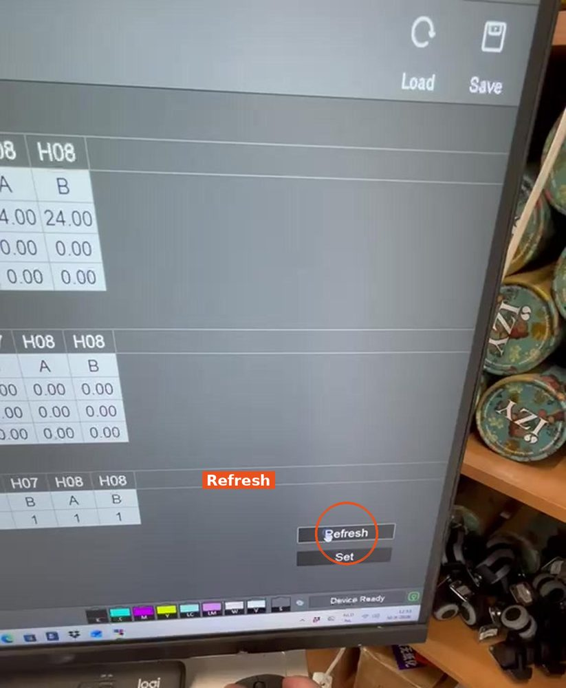

1
Temperatuur printkoppen controleren
- Ga in PrintExp naar het tabblad Voltage.
- Klik rechts onderin op Refresh.
- Kijk bij de rij Head Temp: alle koppen moeten minimaal 43 °C zijn.
Lager dan 43 °C?
Nog niet printen. Wacht even en klik opnieuw op Refresh.

